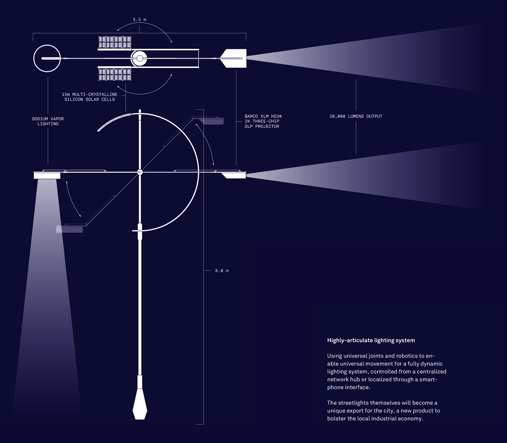

Thessaloniki’s waterfront is it’s most recognizable feature. The space is already active, particularly in summer, but lacks a romantic quality that would elevate it as a 'great space.' Currently, it is used as an axis of movement from one end of the city to the other. There are few moments where there is an incentive to pause and stay.
At the local scale, the waterfront is primed for place-making and the perfect setting for the city to expand, creating new venues on the water. At the global scale, it is a blank canvas on which to create a stronger image of the city.
Astiko Theatro is an urban proposition that attempts to address these two scales through the creation of an integrated system of event space and new media at the waterfront. Astiko Theatro envisions Thessaloniki’s central waterfront as an urban theatre with all its principle components. Each component is manifested as a system of urban products for staging, lighting, and auditorium. This system creates new places and supports an already burgeoning creative events culture.
Wedged between two key nodes, the White Tower and the ancient port, and centrally anchored by the city’s most important public space, Aristotelous Square, the embankment presents an opportunity to reference Thessaloniki’s historic predominance as the region’s hub for transportation, industry, and creativity.
Each lighting device consists of two primary emitters, one that acts as a traditional street light and the other as a projector. The system rotates on two axes so that projections can be oriented in any direction. This universal flexibility enables the entire urban environment, including buildings, awnings, the streetscape, and even the water surface itself, to act as a canvas for artists.
Astiko Theatro can be incorporated into the city’s program for large-scale redevelopment planned in anticipation of the city’s 100th anniversary of the incorporation into Greece. The program has budgeted an estimated €28.2 million in 2011 alone for the revitalization of the city’s physiognomy.